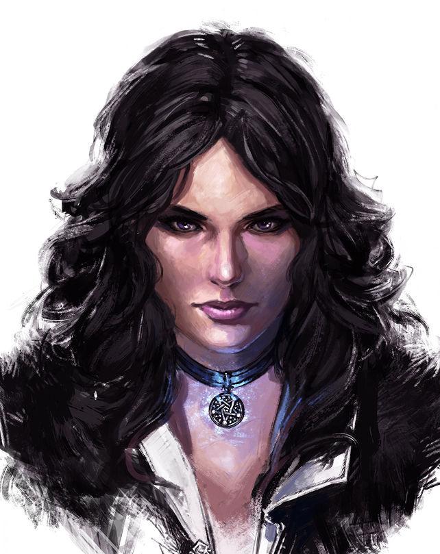
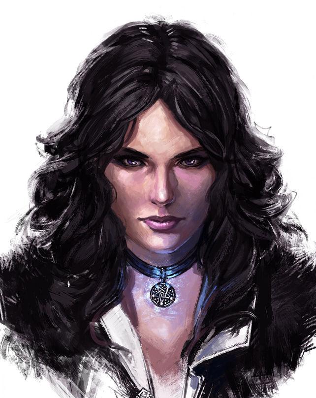

Yennefer
Geralt

Ciri

Błędy też się dla mnie liczą. Nie wykreślam ich ani z życia, ani z pamięci.
I nigdy nie winię za nie innych.
Czy rozumiesz teraz, czym jest neutralność, która tak cię porusza?
Być neutralnym to nie znaczy być obojętnym i nieczułym.
Nie trzeba zabijać w sobie uczuć. Wystarczy zabić w sobie nienawiść.
(Everett) – Miecz. Na plecach. Dlaczego masz na plecach miecz?
(Geralt) – Bo wiosło mi ukradli.
Zło jest złem. Mniejsze, większe, coś pomiędzy - nie ma różnicy.
Stopień jest umowny, definicje rozmyte.
Jeśli miałbym wybierać pomiędzy jednym złem a drugim, wolałbym nie wybierać w ogóle.
Nie dziwota, że są harde urodziwe panie
Wszak im drzewo wynioślejsze, tym trudniej wleźć na nie.
Wżdy i z panną, i ze drzewem kto nie kiep poradzi
Trzeba owszem wziąć i zerżnąć, no i po zawadzie.
Z miłością (...) jest jak z kolką nerkową. Dopóki nie chwyci cię atak,
nawet sobie nie wyobrażasz, co to takiego. A gdy ci o tym opowiadają, nie wierzysz.
Strzeżcie się rozczarowań, bo pozory mylą.
Takimi, jakim wydają się być, rzeczy są rzadko. A kobiety nigdy.
Yennefer
Geralt
Ciri